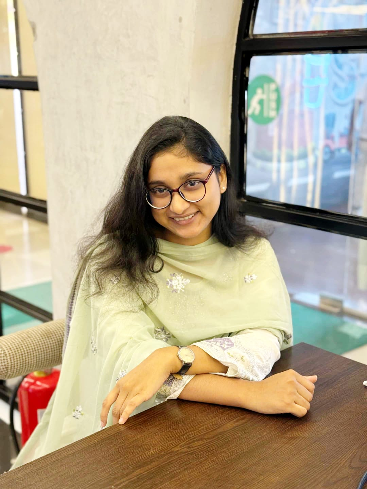

I am an Industrial & Production Engineering student at Rajshahi University of Engineering & Technology (RUET), Bangladesh. I enjoy learning new things and exploring how engineering, technology and research can help solve real-world problems. My interests include sustainable development, supply chain management,renewable energy,energy conversion and optimization. Beyond academics, I am also passionate about working with children with special needs and contributing to initiatives that create a more inclusive and supportive society. I believe that every experience is an opportunity to learn, grow, and make a positive difference.
B.Sc. in Industrial and Production Engineering
Bangladesh
Obtained Higher Secondary Certification with GPA 5.00/5.00
Passing Year: 2022
Obtained Secondary School Certification with GPA 5.00/5.00
Passing Year: 2020
Details will be added soon.
Details will be added soon.
Details will be added soon.
Details will be added soon.
Research publications and academic contributions will be listed here.
An integrated framework exploring AI-based e-waste forecasting and multi-objective optimization for sustainable reverse logistics.
A solar-powered mobility initiative focused on sustainable transportation solutions for electric rickshaws.
Feel free to connect with me for academic, research, and collaboration opportunities.